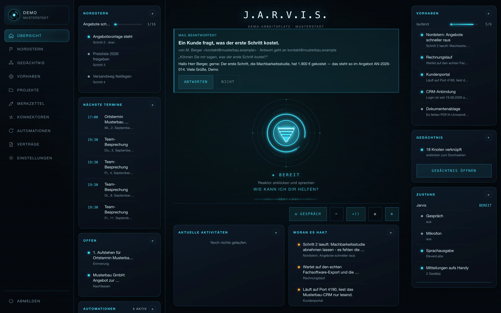
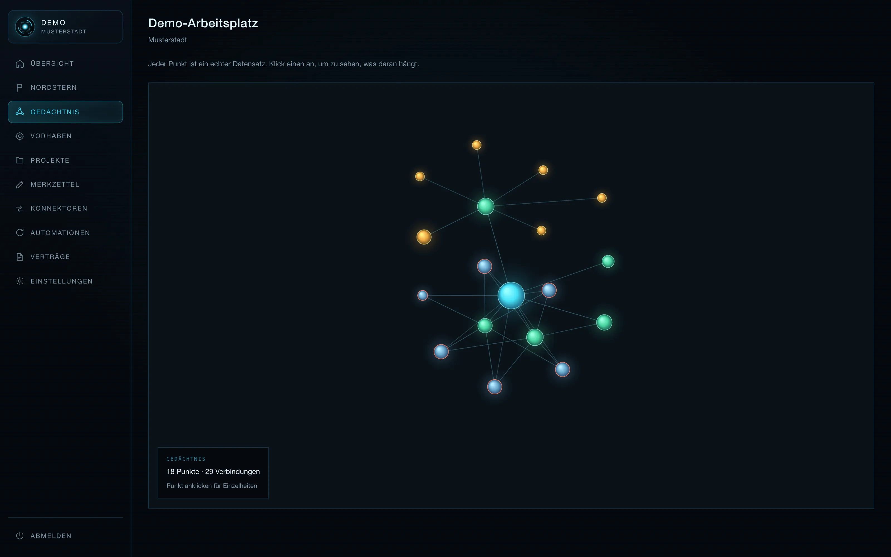
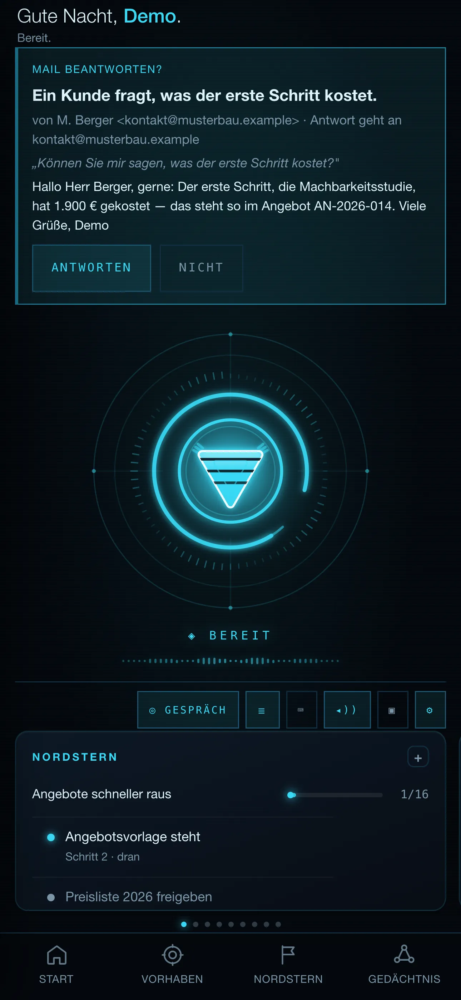

Rausgeschickt, nie wieder angefasst. Wer nachfasst, gewinnt – nur macht es keiner, weil es keiner auf dem Zettel hat.
Assistenzsystem für Unternehmen
Jarvis.
Ihr Assistent, der
Ihre Firma kennt.
Kein Chatfenster, das alles und nichts weiß. Ein Assistent, der Ihr Postfach sieht, Ihre Termine kennt, von selbst nachfasst und sich merkt, was in Ihrem Betrieb gilt. Sie sprechen ihn an – er bereitet die Arbeit vor. Abgeschickt wird nur, was Sie freigeben.
Investition
Preis auf Anfrage
Umfang und Aufwand klären wir im kostenlosen Erstgespräch. Danach erhalten Sie ein festes Angebot – keine versteckten Kosten.
- Läuft auf Ihren Systemen
- Nichts geht ohne Freigabe raus
- Auf Ihre Branche zugeschnitten

Warum überhaupt
Die Arbeit, die niemand
in Rechnung stellen kann
In den meisten Betrieben geht die meiste Zeit nicht für die eigentliche Arbeit drauf, sondern für das Drumherum: nachschauen, nachfassen, erinnern, dieselbe Mail zum vierten Mal schreiben.
Wie war das noch mit diesem Kunden? Die Antwort kennt genau eine Person – und die ist gerade im Urlaub.
Zwanzig Mails, die alle eine kurze, freundliche, korrekte Antwort brauchen. Jeden Tag aufs Neue.
So arbeitet er
Er sieht, was ansteht
Ein Bildschirm statt sieben Programme: offene Aufgaben, die nächsten Termine, wer auf eine Antwort wartet, was gerade hakt. Kommt eine Mail herein, auf die eine Antwort gehört, liegt der Entwurf schon da – Sie lesen ihn und sagen Ja oder Nein.
- Postfach, Kalender und Aufgaben an einer Stelle
- Fertige Antwortentwürfe statt leerer Eingabefelder
- Nachfassen wird vorgemerkt und meldet sich von selbst
Er merkt sich, was gilt
Was einmal gesagt wurde, ist gesagt: Preise, Zuständigkeiten, Absprachen mit Kunden, die Eigenheiten Ihrer Abläufe. Das Wissen liegt in lesbaren Dateien bei Ihnen im Haus – verknüpft, durchsuchbar und ohne dass jemand eine Datenbank pflegen muss.
- Firmenwissen dauerhaft, nicht nur für ein Gespräch
- Verknüpft: eine Frage, alle passenden Zusammenhänge
- Bleibt Ihr Eigentum – Sie können es jederzeit mitnehmen
Er ist dabei, wo Sie sind
Am Schreibtisch, auf der Baustelle, im Zug. Dieselbe Ansicht auf dem Handy, ansprechbar per Sprache – Sie fragen, er antwortet und arbeitet dabei. Und wenn etwas ansteht, meldet er sich, statt zu warten, bis Sie nachsehen.
- Handy, Rechner, Sprache – dieselbe Arbeitslage
- Erinnerungen und Hinweise kommen von allein
- Wiederkehrende Abläufe laufen im Hintergrund weiter


Aufnahmen aus dem laufenden System. Die Inhalte sind Beispieldaten.
Im Alltag
Was er Ihnen abnimmt
Nicht alles auf einmal. Wir schalten frei, was in Ihrem Betrieb wirklich etwas bringt – und bauen darauf auf.
Postfach
Liest mit, sortiert ein, bereitet Antworten vor. Sie geben frei.
Nachfassen
Merkt sich jedes offene Angebot und jede Zusage – und meldet sich am fälligen Tag.
Termine
Kennt den Kalender, bereitet Termine vor, erinnert rechtzeitig ans Losfahren.
Gedächtnis
Legt Wissen dort ab, wo Sie es wiederfinden – und verknüpft es selbstständig.
Abläufe
Wiederkehrende Aufgaben laufen im Hintergrund, im Takt, den Sie festlegen.
Dokumente
Zieht Angaben aus Listen und Exporten und macht daraus fertige Schreiben.
Sprache
Ansprechbar wie ein Mitarbeiter: fragen, zuhören, weiterarbeiten.
Ihre Programme
Verbindet, was Sie ohnehin nutzen – statt Ihnen neue Software zu verkaufen.
Die Leitplanken
Ein Assistent, der fragt,
bevor er handelt.
Ein System, das eigenmächtig Mails verschickt, ist kein Fortschritt, sondern ein Risiko. Deshalb steht die wichtigste Regel nicht im Kleingedruckten, sondern ganz vorn.
- Nichts verlässt das Haus ohne Ihr Ja. Keine Mail, keine Nachricht, kein Beitrag, keine Terminänderung. Er zeigt wörtlich, was er tun will, und wartet.
- Er läuft bei Ihnen. Auf Ihrem Rechner oder auf einem Server, den Sie bestimmen. Ihre Zugänge bleiben Ihre.
- Keine gemeinsame Datenbank. Ihre Daten liegen nicht mit denen anderer Kunden zusammen.
- Alles Persönliche in einer Datei. Was Ihre Firma betrifft, steht nicht im Programm, sondern in einer Datei, die Sie lesen und ändern können.
- Nachvollziehbar. Sie sehen, was er getan hat, wann er es getan hat und woher er es wusste.
Freigabeso sieht es aus
„Ein Kunde fragt, was der erste Schritt kostet."
Entwurf
Guten Tag Herr Berger, gerne: Der erste Schritt ist die Analyse. Den Preis dafür finden Sie in Ihrem Angebot unter Position 1. Viele Grüße
AntwortenNicht
Erst nach dem Klick geht etwas raus. Vorher liegt der Entwurf nur da.
Der Weg dorthin
In drei Schritten im Einsatz
Erstgespräch
Kostenlos und unverbindlich. Wir sehen uns an, wo in Ihrem Betrieb die Zeit hängen bleibt, und ob ein Assistent daran wirklich etwas ändert. Wenn nicht, sagen wir das.
Zuschnitt
Sie bekommen ein festes Angebot: welche Systeme angebunden werden, welche Abläufe er übernimmt, was das kostet und wie lange es dauert.
Einsatz
Wir starten mit einem Bereich, der schnell etwas bringt. Läuft der im Alltag, kommt der nächste dazu. Sie bleiben Eigentümer der Lösung.
Häufige Fragen
Jarvis – kurz erklärt
Was ist ein persönlicher KI-Assistent für Unternehmen?
Ein KI-Assistent, der nicht allgemein antwortet, sondern Ihr Unternehmen kennt: Er sieht Postfach, Kalender und offene Aufgaben, kennt Ihre Kunden, Projekte und Abläufe und arbeitet damit. Statt Antworten zu liefern, bereitet er Arbeit vor – Entwürfe, Erinnerungen, Zusammenfassungen und wiederkehrende Abläufe.
Verschickt der Assistent selbstständig E-Mails?
Nein. Es gilt eine feste Regel: keine E-Mail, keine Nachricht, kein Beitrag, keine Terminänderung ohne ausdrückliche Freigabe. Der Assistent zeigt wörtlich, was er tun will, und wartet auf Ihr Ja. Entwürfe, Notizen und Erinnerungen sind davon ausgenommen – die gehen nirgendwohin.
Wo liegen meine Daten?
Der Assistent läuft auf Ihrem eigenen Rechner oder auf einem Server, den Sie bestimmen. Ihre Zugänge bleiben Ihre Zugänge; Firmenwissen liegt in Dateien, die Sie sehen und mitnehmen können. Es gibt keine gemeinsame Datenbank mit anderen Kunden.
Was kostet Jarvis?
Preis auf Anfrage. Der Umfang hängt davon ab, welche Systeme angebunden werden und wie viele Abläufe der Assistent übernehmen soll. Im kostenlosen Erstgespräch klären wir das – danach erhalten Sie ein festes Angebot.
Wie lange dauert die Einrichtung?
Wir starten bewusst klein: zuerst ein klar umrissener Bereich – zum Beispiel Postfach und Nachfassen – der nach wenigen Wochen im Alltag läuft. Danach kommen weitere Abläufe dazu.
Brauche ich dafür eine IT-Abteilung?
Nein. Einrichtung und Anbindung übernehmen wir. Sie brauchen niemanden, der das System betreut – und Sie haben einen festen Ansprechpartner statt einer Hotline.
Verwandte Themen: Prozessautomatisierung, KI-Beratung und unser Ratgeber zu KI im Mittelstand.
Preis auf Anfrage
Sehen wir uns an, was er
für Ihren Betrieb tun kann.
Im Erstgespräch klären wir, welche Abläufe sich lohnen – ehrlich, auch wenn die Antwort „noch nicht" lautet. Kostenlos und unverbindlich.